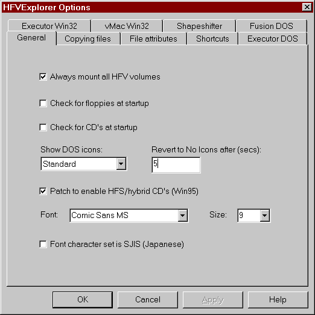

Always mount all HFV volumes:
The current version of HFVExplorer ignores this setting and always mounts the HFV, DSK and HFx files from the startup directory.
Check for floppies at startup:Of checked, the floppy drive is accessed when HFVExplorer start to see if there is any Mac floppy present. Check this option if you often use Mac floppies to import/export files, otherwise uncheck it.Of checked, the CD drives are accessed when HFVExplorer start to see if there are any Mac CD's present. Check this option if you often use Mac CD's, otherwise uncheck it.
Show DOS icons:Used to select how to display icons on Windows volumes. No Icons is fastest, Standard is slower (shows icons from executable files and some documents) and All files is very slow (attempts to find all document icons).
Revert to no icons after (sec):Defines the maximum time in seconds allowed for attempt to get the DOS icons. If the volume contents is not ready when this time has passed, the rest of the files are shown with no icons.
Patch to enable HFS/hybrid CD's (Win95):This one needs to be checked in order to access Mac CD's under Windows 95 and Windows 98. It instructs the cdenable.vxd device driver to work around one "bug" in Windows CD handling code.
Font and Size:Defines the font used in windows and controls where Macintosh file names a displayed. The only important thing is to use a font with sufficient special character support. "MS Sans Serif" won't do, "Arial" has special characters but is rather ugly. I prefer "Comic Sans MS". If you intend to use the Finder view mode, you need to use a rather small point size.
Font character set is SJIS (Japanese):Japanese users need to check this option. The change will take effect after the program is restarted. If this options is used with a Latin font, the volume tree and volume contents will be empty.